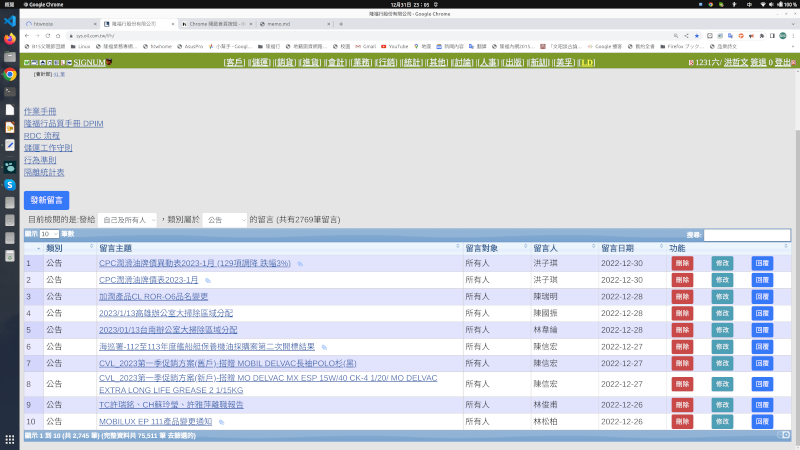
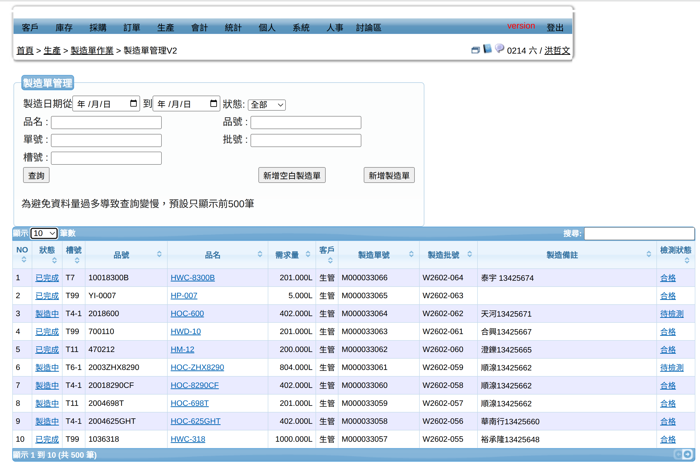

資工在職專班/讀書研究計劃
-
From: 洪哲文
- 一、就學動機
-
我很想做的事
1. 過去我們為自己和關係企業開發的ERP，因開發時間前後不一，且有很多版本更新的須求，已面臨重新整理甚或重寫的挑戰。我想要嘗試參與重寫的工作，期望能透過重返校園的機會，認識更多師生朋友、學習應用更寬廣、更新的知識。
2. ERP中的HR人資系統(包括人資、缺勤、勞健保、薪獎管理)，想做成獨立的Open Source套件，希望在Github上分享出去供需要的人使用。(很多中小企業，對於員工的人資資料、缺勤紀錄、休假計算、勞保、健保給付計算等等都有共同的需要，但還是有相當大部分的企業，還是用人工、用excel檔案、或部份採用資料庫程式的方式在管理。這些工作頗為繁瑣，而且往往法令有點變動;比如二代健保規定出現了，就又產生很多問題。做成OpenSource大家共享，遇有變動，更新版本供需要者取用。)
draft of OS/HRM Plan
-
- 二、學習計畫
- 學習透過學術論文、案例研究、產業報告等文獻，以吸收、研究其成敗的經驗。
- 加強批判性思考與分析訓練。
- 持續進行專案的改進研究。
- 三、研究計畫
- 改造舊ERP系統，升級為MVC架構的。
- 精進物流系統的自動化。
- 人事薪資系統分散式的雲端作。
- 四、未來志向
我們公司從2003年使用FreeBSD開始，受益於Open Source的好處實多。我們也希望讓自己開發的各種app都能分享出去，在開源社群中做出貢獻。 - 五、自我能力評估
- 熟悉Ubuntu OS,Shell Script,PHP5.6,可運用HTML,CSS,JavaScript,Phython進行Coding以配合工作。
- 企待補足PHP7.4,8.0能力、學習MVC架構、Laravel工作方法等，以持續改善所開發的系統。
- 六、結語
- 附件、在職期間參與專案簡介
- 1.隆福行的ERP系統
- 
- 2.全永順導入SYN_ERP+生產管理模組的系統(2022-23)
- 
Syntigris_ERP試用版 (可用 tester#tester 登入)